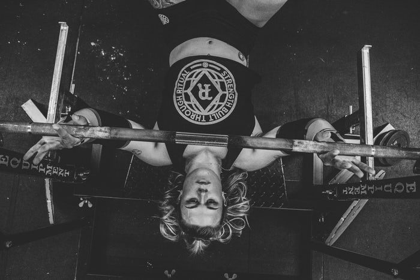
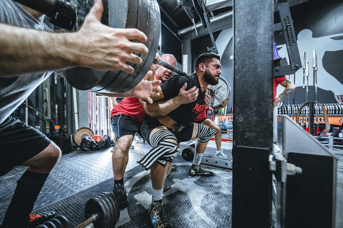
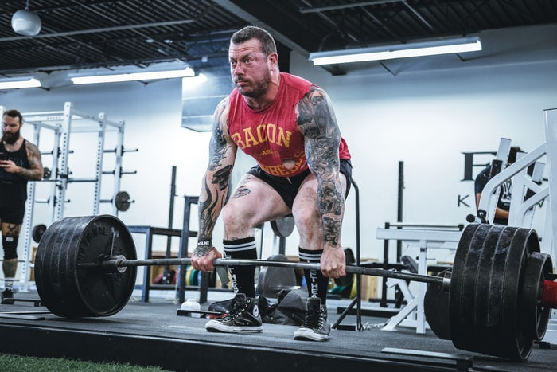

1. 벤치프레스
벤치에 누워 엉덩이와 견갑골을 등받이에 붙이고, 허리는 10cm가량 아치형을 만들어준다.어깨너비 두 배로 바를 잡고 눈이 바벨과 수직이 되도록 위치시킨다.
바를 들어 가슴 중앙과 바가 수직이 되도록 위치시킨 후 팔꿈치를 살짝 구부려 고정한다.
가슴과 바가 자석처럼 서로 만나는 느낌으로 가슴 위쪽 5~10cm까지 저항을 느끼며 바벨을 천천히 당긴다.
겨드랑이에 힘을 준다는 느낌으로 바벨을 밀어 올린다.

2. 스쿼트
선 자세에서 어깨너비보다 넓게 바벨을 잡는다.
바벨을 들어 머리 뒤의 승모근에 위치시킨다.시선은 정면을 향하고 복부에 힘을 주어 허리를 단단히 조여준다.
무릎이 발끝보다 앞으로 나오지 않도록 하면서 허벅지와 수평이 될 때까지 앉는다.
발뒤꿈치로 민다는 느낌으로 허벅지에 힘을 주면서 일어선다.

3. 데드리프트
바벨을 들고 양발 사이에 발 하나가 들어갈 정도1로 좁게 선다.어깨가 굽지 않도록 시선을 앞쪽에 두고 가슴을 내밀어 준다.
등의 각도가 지면과 수평에 가까워질 때까지 상체를 숙인다.시선은 45도 앞을 바라본다.
대퇴이두근의 힘을 이용하여 상체를 일으킨다.
